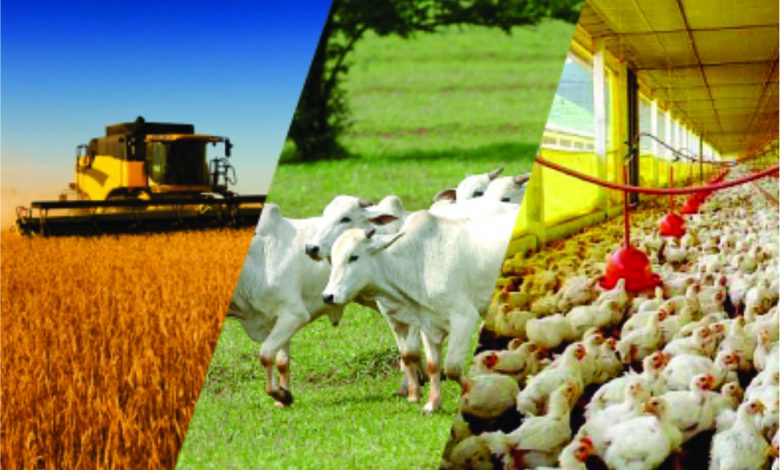

<!DOCTYPE html>
<html lang="en">
<head>
    <meta charset="UTF-8">
    <meta http-equiv="X-UA-Compatible" content="IE=edge">
    <meta name="viewport" content="width=device-width, initial-scale=1.0">
    <title>trabalho sobre agropecuaria</title>
</head>
<body>
    
</body>
</html>
<header class="cabeçalho">
    
    <ul class="cabeçalho-lista">
    <li class="cabeçalho-lista-item">AGRO</li>
    <li class="cabeçalho-lista-item">PECUARIA</li>
    </ul>
</header>

<section class="escola">
<div class="escola-div-conteudo">
<h2 class="escola-titulo">Sobre a Agropecuaria</h2>
<p class="escola-texto-um">A agropecuária é uma atividade econômica do tipo primária que envolve o cultivo da terra e a criação de animais. Esse setor é um dos mais importantes da economia brasileira. </p>
<p class="escola-texto-dois">A agropecuária é importante pois está centrada na produção de bens primários que servem para o desenvolvimento da sociedade.</p>


</div>



</section>